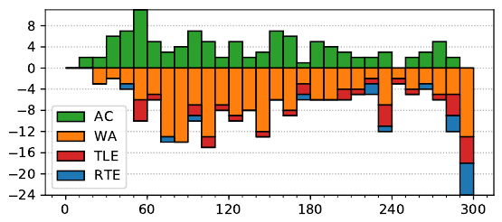

ACM ICPC World Finals 2019
Solved by 109 teams.
First solved after 14 minutes.
Shortest team solution: 1245 bytes.
Shortest judge solution: 1048 bytes.

Each connected component of the graph is independent, so we will consider only a single component. If it is a tree, then every single edge is a dead end, but for any street from u to v where u is not a leaf, there is another dead end street from some w to u, making the dead-end sign from u to v redundant. So the only signs to place are those from u to v where u is a leaf.
If a component is not a tree, not all streets are dead ends. In general, a street from u to v is a dead end if, removing the edge between u and v in the graph, this splits the graph into two connected components and the component containing v is a tree. We could identify these edges by finding biconnected components/bridges in the graph, but this is overkill. The component will consist of some “core” of non-deadends, along with trees hanging off the core. We can identify these trees by repeatedly removing leaves until none are left. Any street from a non-removed vertex to a removed vertex gets a dead-end marker.